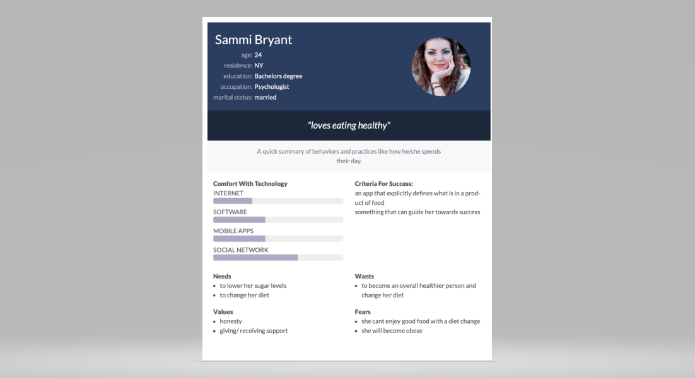
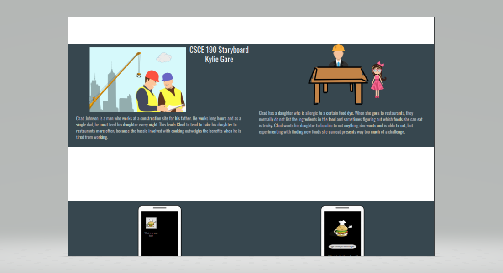
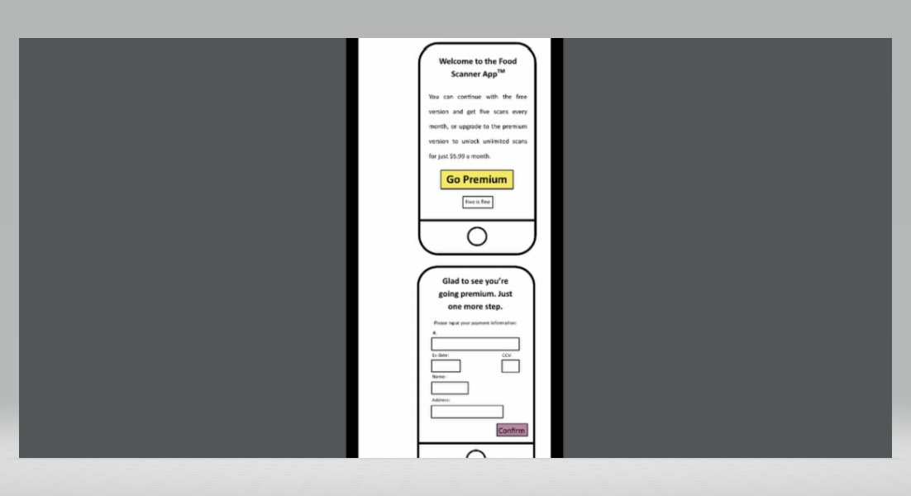
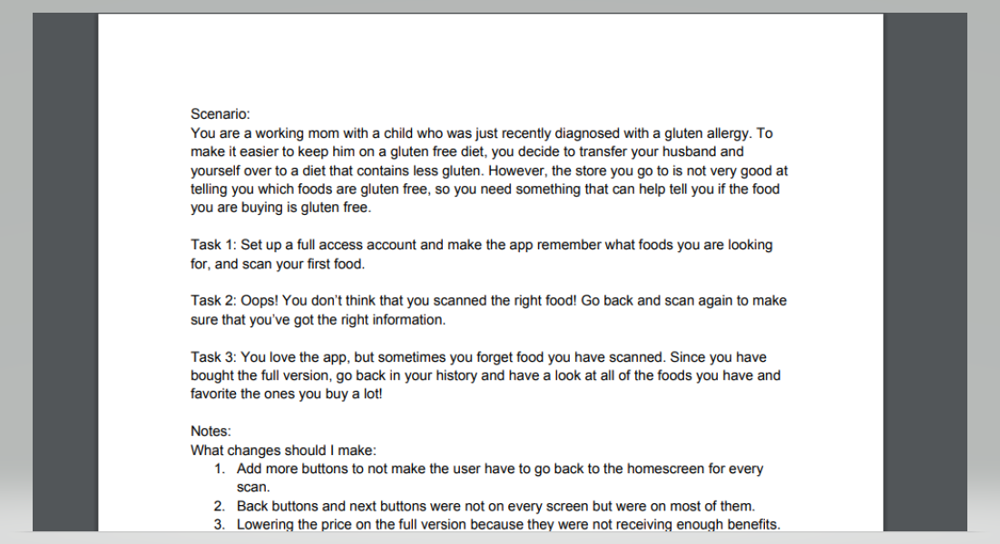
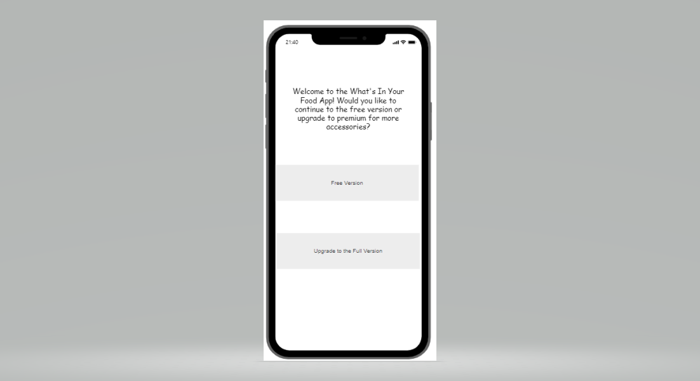

Problem Statement: What is actually in your food?

Our users are frustrated because many of their everyday food products contain unhealthy ingredients and they feel like major food companies are manipulating them. Our solution should provide users with the information to be more knowledgeable when selecting their future food supplies.
Affinity Diagram

My group and I all worked together in order to brainstorm stuff about what may actually be contained in food and also healthier nutrition options and ways to read the nutrition labels.
Personnas: 4 Personnas for Whats In Your Food App
Multiple personnas that depict the type of users that might use our application.
Storyboard: 4 Storyboards for Whats In Your Food App
Comic strips that all illustrate the need for a What Is In Your Food application.
Sketches: Whats In Your Food App
Sketches of multiple potential app solutions for What Is In Your Food application.
Paper Prototype: Whats In Your Food App

A functional paper prototype which we can use to ideate.
Usability Testing: Whats In Your Food App
A scenario and tasks and the outcome of usability tests.
Low-Fi Prototype: What's In Your Food App
A functional low fidelity prototype which we can use to ideate.
Hi-Fi Prototype: What's In Your Food App
A functional high fidelity prototype which we can use to ideate.